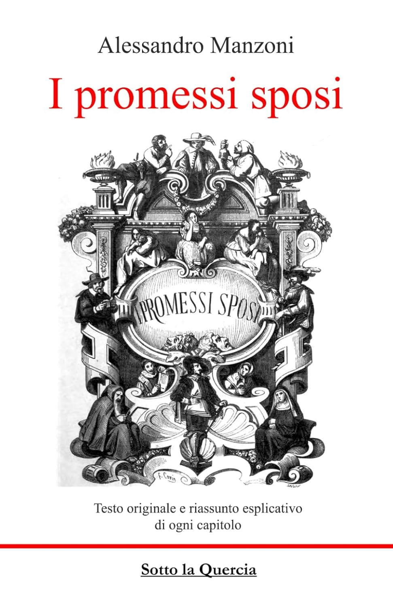
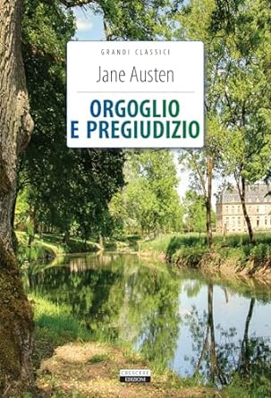
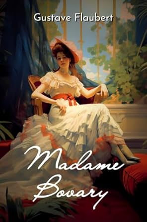

Vetrina
L'improvviso e casuale accendersi di una passione incontrollabile tra i due protagonisti apre la storia.
Romeo va a una festa per vedere Rosalina, e non per cercare Giulietta, ma, quando i due si incontrano, si perdono l'uno nell'altra, entrambi ignari di avere di fronte un nemico.
Tragedia dell'amor giovane, Romeo e Giulietta è considerata la storia d'amore per eccellenza proprio perché è molto di piú
Ultima settimana del novembre 1327. Il novizio Adso da Melk accompagna in un'abbazia dell'alta Italia frate Guglielmo da Baskerville, incaricato di una sottile e imprecisa missione diplomatica.
Ex inquisitore, amico di Guglielmo di Occam e di Marsilio da Padova, frate Guglielmo si trova a dover dipanare una serie di misteriosi delitti (sette in sette giorni, perpetrati nel chiuso della cinta abbaziale) che insanguinano una biblioteca labirintica e inaccessibile. Per risolvere il caso, Guglielmo dovrà decifrare indizi di ogni genere, dal comportamento dei santi a quello degli eretici, dalle scritture negromantiche al linguaggio delle erbe, da manoscritti in lingue ignote alle mosse diplomatiche degli uomini di potere. La soluzione arriverà, forse troppo tardi, in termini di giorni, forse troppo presto, in termini di secoli.
La paralisi del mondo joyciano sta in questo: che i protagonisti delle sue storie non conoscono nessuna libertà, non hanno - letteralmente – “libertà di parola”,
perché non sanno pronunciare parole libere, e continuano a usare parole altrui, pensieri altrui, a bere whiskey e gin altrui, a guardare un mare altrui. Per questo (come noi, del resto) continuano a parlare e parlare... “Gente di Dublino” è, in questo senso, un grande laboratorio, umano e linguistico. Acquatiche, vitree, torbide di mille residui putrescenti, le storie di Joyce non ci offrono corpi veri e propri, da toccare amare odiare. I loro personaggi sono labirinti di parole non dette, di drammi non espressi.

La storia di Renzo e Lucia, don Abbondio e padre Cristoforo, don Rodrigo e l'Innominato ha appassionato generazioni di lettori e occupa ancora oggi un posto del tutto speciale nelle biblioteche degli italiani.
"Storia milanese del XVII secolo scoperta e rifatta da Alessandro Manzoni" era il sottotitolo con cui l'autore presentava "I promessi sposi", uno dei capolavori della nostra letteratura, affresco storico e romanzo in cui si fondono mirabilmente immagini forti e poetiche, pietas per un'umanità ingenua e dolente, ironia. Questa edizione si avvale di un'ampia premessa e di un rigoroso corredo di note, utilissimi strumenti per comprendere pienamente i molteplici livelli e aspetti della narrazione. Introduzione di Arnaldo Colasanti.
"Il fu Mattia Pascal", il più famoso dei romanzi pirandelliani, riveste un'importanza fondamentale nella letteratura italiana del Novecento. Grottesco antieroe, Mattia Pascal è uomo senza certezze e senza vocazioni.
Creduto morto dopo una fuga da casa, pensa di approfittarne per cambiare vita, ma il desiderio di spezzare le catene delle convenzioni sociali, lo slancio verso la riconquista di un'originaria purezza e autenticità falliscono: perché la vita deve comunque darsi una forma, e la fatica che bisogna affrontare per crearne una nuova è talora così grande che ci costringe a rientrare precipitosamente nella vecchia. La quale, pur con i suoi originari limiti e le sue falsità,
rende possibile l'esistenza, allontanando il rischio della disgregazione, impedendoci di essere altro da noi, inchiodandoci a una realtà fittizia, ma inalienabile.
Per cinquantun anni, nove mesi e quattro giorni Fiorentino Ariza ha perseverato nel suo amore per Fermina Daza, la più bella ragazza dei Caraibi, senza mai vacillare davanti a nulla, resistendo alle minacce del padre di lei e senza perdere le speranze neppure di fronte al matrimonio d'amore di Fermina con il dottor Urbino.
Un eterno incrollabile sentimento che Fiorentino continua a nutrire contro ogni possibilità fino all'inattesa, quasi incredibile, felice conclusione.
Chi è Siddhartha? È uno che cerca, e cerca soprattutto di vivere intera la propria vita. Passa di esperienza in esperienza,
dal misticismo alla sensualità, dalla meditazione filosofica alla vita degli affari, e non si ferma presso nessun maestro, non considera definitiva nessuna acquisizione, perché ciò che va cercato è il tutto, il misterioso tutto che si veste di mille volti cangianti. E alla fine quel tutto, la ruota delle apparenze, rifluirà dietro il perfetto sorriso di Siddhartha, che ripete il «costante, tranquillo, fine, impenetrabile, forse benigno, forse schernevole, saggio, multirugoso sorriso di Gotama, il Buddha, quale egli stesso l’aveva visto centinaia di volte con venerazione».

Primo Levi, reduce da Auschwitz, pubblicò "Se questo è un uomo" nel 1947. Einaudi lo accolse nel 1958 nei "Saggi" e da allora viene continuamente ristampato ed è stato tradotto in tutto il mondo. Testimonianza sconvolgente sull'inferno dei Lager, libro della dignità e dell'abiezione dell'uomo di fronte allo sterminio di massa, "Se questo è un uomo" è un capolavoro letterario di una misura, di una compostezza già classiche.
È un'analisi fondamentale della composizione e della storia del Lager, ovvero dell'umiliazione, dell'offesa, della degradazione dell'uomo, prima ancora della sua soppressione nello sterminio.

Jane Eyre racconta la storia dell’educazione sentimentale di una giovane istitutrice inglese, orfana e di umili origini, che ottiene alla fine, dopo molte peripezie, la felicità in amore unendosi all’ardente, impetuoso Edward Rochester, suo padrone; con questa si intreccia una precedente e tragica storia d’amore e follia che ha avuto per protagonisti Edward e Bertha, la donna strappata alla sua terra caraibica e relegata come pazza in una soffitta nella grande magione di Rochester: Thornfield Hall.
In questo romanzo, Tolstoj affronta, approfondisce e mette a nudo temi rivoluzionari, per quel periodo storico e per la notoria ristrettezza di vedute della nobiltà e dell'alta borghesia: ipocrisia, gelosia, famiglia, fede, il desiderio insano della carne, l'antitesi fra la vita e il mondo della campagna e della città.

“Non aveva mai capito di amarlo tanto come ora, quando l’amore era vano”
Jane Austen è una delle poche, autentiche grandi scrittrici che hanno saputo fare breccia nei cuori e nelle menti di tutti i lettori, senza eccezioni.
Fra i suoi tanti capolavori, Orgoglio e pregiudizio (pubblicato nel 1813) è sicuramente il più popolare e amato:
le cinque figlie dell’indimenticabile Mrs Bennet, tutte in cerca di un’adeguata sistemazione matrimoniale, offrono l’occasione per tracciare un quadro frizzante e profondo della vita nella campagna inglese di fine Settecento.

A Barcellona, una mattina d'estate del 1945 il proprietario di un negozio di libri usati conduce il figlio undicenne, Daniel, al Cimitero dei Libri Dimenticati, un luogo segreto dove vengono sottratti all'oblio migliaia di volumi di cui il tempo ha cancellato il ricordo.
E qui Daniel entra in possesso di un libro maledetto che cambierà il corso della sua vita, introducendolo in un mondo di misteri e intrighi legato alla figura di Julián Carax, l'autore di quel libro. Daniel ne rimane folgorato, mentre dal passato iniziano a emergere storie di passioni illecite, di amori impossibili, di amicizie e lealtà assolute, di follia omicida e di un macabro segreto custodito in una villa abbandonata. Una storia in cui Daniel ritrova a poco a poco inquietanti paralleli con la sua vita.

Tutto in Madame Bovary (1857) sembra disporre la scena dove il desiderio ha luogo insieme all'abisso che lo cancella.
Emma Bovary ama come si divora, ama in una tragica voracità che somiglia a quella di un organismo incapace di assimilare, consuma se stessa e l'oggetto del suo desiderio in un tragico processo di alienazione amorosa,
aiutata anche dal marito, Charles, che è tutt'altro che un uomo tranquillo e innocuo, ma un masochista morale di alto lignaggio che, con un sadismo perfettamente camuffato, contribuisce in maniera determinante al suicidio della moglie.
Una Milano che, con i suoi inferni vecchi e nuovi, i suoi falansteri giganteschi, certi suoi grovigli di vicoli, è insieme ritratto della metropoli in un preciso momento storico e simbolo della babele d'ogni tempo. È questo lo sfondo su cui si muove il protagonista di Un amore: un professionista maturo, un uomo che ha atteso troppo, senza saperlo; è rimasto nell'intimo un giovane, crede che il sentimento sia ancora capace di compiere tutti i miracoli.
E si innamora perdutamente di una donna giovanissima d'anni, ma già carica della cinica spregiudicatezza, della stanchezza morale di un'epoca. Primo e unico romanzo erotico dello scrittore bellunese, Un amore continua l'indagine buzzatiana nelle inquietudini dell'uomo contemporaneo, esplorandone una dimensione, quella del sentimento, di primaria importanza e descrivendo con ineguagliabile finezza la parabola di un amore vero, di una limpidezza esemplare, ma destinato a smarrirsi nella menzogna, come in un labirinto.

Israele, guerra dei Sei Giorni. Avram, Orah e Ilan, sedicenni, sono ricoverati nel reparto di isolamento di un ospedale di Gerusalemme.
I tre ragazzi si uniscono in un'amicizia che si trasformerà, molto tempo dopo, nell'amore e nel matrimonio tra Orah e Ilan.
Dopo trentasei anni, Orah è una donna separata, madre di due figli, Adam e Ofer. Quest'ultimo, militare di leva, accetta di partecipare a un'incursione in Cisgiordania. Preda di un oscuro presentimento, Orah decide di abbandonare tutto e partire, per non essere presente quando gli ufficiali dell'esercito verranno a darle la notizia della morte del figlio. Ad accompagnare la donna c'è Avram, ricomparso nella sua vita dopo più di un ventennio. Il loro viaggio diventa occasione di riflessione e di rimpianto, ma anche di gioia e tenera rievocazione. Fino a che arriverà il momento di tornare a fare i conti con il presente che, tutt'intorno, preme inesorabile.
*Le edizioni mostrate potrebbero non essere quelle disponibili in libreria.
Archivio
Sul seguente link è possibile scaricare un file excel dell'elenco dei libri catalogati. Essendo la catalogazione iniziata da relativamente poco, sono presenti solo poche migliaia di libri rispetto ai circa 40mila presenti in libreria. ELENCO FORMATO EXCEL